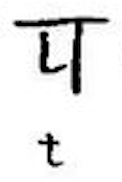
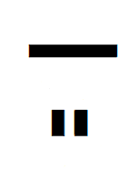

が必要である。
が必要である。バート語(バート語:Bhátán, リパライン語:Phertarsvirle)は、PMCFアイル共和国バート人自治区で話されるシアン大語族ラネーメ語族ファスマレー語派アイル諸語の言語である。ラネーメ祖語から派生した言語であり、主にアイル共和国の闇島において話されている。話者数は三万人ほどである（話者数要考察。少なくとも「三万人は流石に少なすぎ」という結論になった。）ラネーメ祖語における有気無気の対立を保存している（という人もいる）（諸説あります）が、ラネーメ語族においてはあまり見られない屈折的な言語構造になっている。
| 唇音 | 歯茎音 | そり舌音 | 軟口蓋音 | |||||
| 鼻音 | m [m] | n [n] | ṇ [ɳ] | |||||
| 破裂音 | p [p] | b [b] | t [t] | d [d] | ṭ [ʈ] | ḍ [ɖ] | k [k] | (g [ɡ])*1 |
| ph [pʰ] | bh [bʱ] | dh [dʱ] | kh [kʰ] | gh [ɡʱ ~ ɣ] | ||||
| 摩擦音 | w [v ~ ʋ ~ w] | c [s] | s [z] | ṣ [ʂ] | h [x] | |||
| 接近音 | l [l ~ ɾ] | ḷ [ɭ] | ||||||
| ふるえ音 | r [r] | |||||||
| (x [ʃ])*2 | z [tʃ] | j [j] | y [ɥ] | ṣl [ʂɻ ~ ʂɭ] |
注：
| 語頭に立てる |
| 語頭に立たない |
長短のミニマムペアは少ないが、gháni「火」とghání「(主観的な)暑さ」などの例があるにはある。
短母音はとても短く、口語では不安定であるため、例えば ṣíkahazená が ṣíkahzená や ṣíkházená などと俗に発音されることが少なくない。ただし、両方の短母音を母音として発音するのが規範的である。
フィラーea, aḍí, gaṇṇí, khaṇṇí, khaṇḍí の a は義務的にəとして発音される。間投詞 lábha? に関しては、 a が義務的にəとして発音されるだけでなく、á も義務的に əː として発音される。
bh, dhの後のaは後舌、b, dの後のaは前舌の傾向がある。具体的には、
というのが典型的な発音である。
長母音であるá, í, úがそれぞれa, i, uとして、eやoがそれぞれ[e̞ ~ ɛ], [o̞ ~ ɔ]として発音される場合がある。
バート語には高低のイントネーションがある。単語ごとに決まっているものではないので、アクセントでも声調でもない。と思ったが、fixed stressかもしれないという説が出ており、考察中である。
バート語の文章の標準的な読み上げをするときは、音の高低についても気を配らねばならない。イメージを掴むために、とりあえず著者(jekto.vatimeliju)の発話の録音を一つ聞いてもらおう。
このように、「文中のたいていの音節を同じ高さで読むが、たまにそれよりかなり高く読む音節があり、さらに文末では音が下がっていく」というのが、標準的な読み上げの基本である。音の高低に気を配ることは、文を読み上げる際だけではなく、シャハバート詩の構造を理解する際にも不可欠である。どこを高く読み、どのように文末の音を下げていくのかを自力で導出するための方法を以下では説明していく。
バート語の文章はnautu【正書法上の語。文字にしたときにナウトゥホーマーエーでひとまとまりに繋がっているもの。スペースで区切られた単語。】の集まりからなることは明らかだが、音の高低を明らかにする上では、nautuの集まりからなる「ピッチ句」というものを基準にものごとを考える必要がある。たとえば、sáhomá woghiti cájau【姉/妹と一緒に】という表現は3つのnautuから構成されるが、単一のピッチ句からなる。例外的に、juecleone【ユエスレオネ】などの一部の外来語は、単一のnautuでありながら複数のピッチ句で構成され、juecとleoneがそれぞれピッチ句を成す。
次に、ピッチ句が集まってできる「アンシェヌマン句」という階層がある。これはピッチとはほとんど関係ないので詳細な説明は割愛するが、子音終わりの単語の後に母音始まりの単語が来た際に、アンシェヌマン句の中では子音とそのあとの母音をひとまとまりに発音することが許される（たとえば、rúṣán ákíjam【新たな日】は単一のアンシェヌマン句であるので、rúṣá nákíjamであるかのように発音される）一方で、複数のアンシェヌマン句をまたぐ場合はそれができない（たとえば、sáhomá woghit ákaze【姉/妹が読む】においてはsáhomá woghitが一つのアンシェヌマン句、ákazeが一つのアンシェヌマン句を成すので、sáhomá woghi tákazeのように発音することはできない）。
アンシェヌマン句が集まったものがaccabát【一文】である。accabátはピリオドや疑問符によって終了する。ピリオドはaccabátの終わりに置いて音が下がっていくことを表す。疑問符はaccabátの終わりに置き、音が一旦下がってから最後に上がることを表す。
カンマによってaccabátが終了することもある。例えば、人に呼びかけた後に具体的な内容を含むような文は、名詞の主格のあとにカンマを置いてから本文が書かれて本文がピリオドで終了するものとして書かれるが、音の高低に関してはこれはカンマによってaccabátが終了していると考えたほうがよい。これを明記するために、そのような状況ではカンマを2回書くことがたまにある。
accabátが集まることで段落ができる。これは話のひとまとまりを表し、話し始めるとき、特に長い文章を話し始めるときは、注意を引くために段落の頭の単語は高く読み始めてそこから音が下がっていくような読み方となる。
段落が集まることで文章ができる。
low・mid・highの三種類に分類して整理する。参考までに著者(jekto.vatimeliju)の発声を掲載しておく。
普通に出せる声域の最低音ぐらいの高さ。
この音源では89Hzくらい（サンプル点20個のうち平均89.40Hz、標準偏差1.16Hz）。
会話をする際にもっとも自然に発することのできる高さ。
この音源では112Hzくらい（サンプル点20個のうち平均111.8Hz、標準偏差0.8Hz）。
midから勢いよく音を高くして自然に到達することのできる高さ。
この音源では168Hzくらい（サンプル点20個のうち平均168.3Hz、標準偏差0.9Hz）
後置詞・名詞接続詞は直前のnautuと同じピッチ句に属する。ゆえに、複数のnautuが単一のピッチ句に入る例としては、たとえば以下のようなパターンが挙げられる。
これ以外にも複数のnautuが単一のピッチ句に入るパターンはある。たとえば、sáhomá woghit（sá【女】、woghit【兄弟姉妹；はらから】）は単一のピッチ句で読むと【女という性質を持った兄弟姉妹】、つまり【姉妹】の意味であり、一方「ある女にとって兄弟姉妹に当たる人」の意味の場合は二つのピッチ句に分けて読む。一般に、名詞の属格が所有属格としても性質属格としても使えるとき、性質属格として使われるときは属格が直後の名詞と同一のピッチ句に属する場合がある。また、ピッチ句は必ず一音節以上であるという制約から、k hem【〜のものである】などについても複数のnautuが単一のピッチ句に入ることとなる。
1音節からなるピッチ句は常にmidで読む。
例: ko【これ】: mid
ピッチ句が複数音節からなる場合、ピッチ句の最終音節はhighとなり、それ以外は基本的にmidである。
例: aghauṭaḍi hína【本に】: mid-mid-mid-mid-mid-high
á, í, ú, e, o, ai, auがあるような2つのmidな音節に挟まれた短音節は、midではなくhighとすることが多い。（midでもよい。）この操作のことをdhez【小休憩】と言う。
例: cepatepa【会話】 : mid-high-mid-high または mid-mid-mid-high
例: bákatúhomá【勇敢な者の】 : mid-high-mid-mid-high または mid-mid-mid-mid-high
条件「2つのmidな音節に挟まれた」を満たさない場合に注意。
例: ṣomadhí【私は積む/私は敬礼する】 : mid-mid-high であって mid-high-high ではない
条件「短音節」を満たさない場合にも注意。
例: nínaccúzá【貝葉(複数)】 : mid-mid-mid-high であって mid-high-mid-high ではない
また、「最後から二番目に短音節が来ている単語」の後ろに内容語がくっついて複合語となった場合には、dhezを引き起こさない。
例: gháwanúnímaṣ【ドゥバーギョ民族】 : mid-mid-mid-mid-high であって mid-high-mid-mid-high ではない
accabátの高低は、それを構成するピッチ句の高低を集めた後に、文末に変更を加えることによって構成される。ピリオドで終わる文はlowで終わるようになり、疑問符で終わる文は最後から2番目の音節でlowに達した後に最終音節をhighで読む。
以下の規則を、ピリオドで終わる文はそのまま適用、疑問符で終わる文は最終音節を無視して適用することで、accabát単位での高低が得られる。
文末に来るのが1音節語であり、á, í, ú, e, o, ai, auを含むのであれば、音節内で mid → low へと下げる。
例: hem.【である。】 : fall
文末に来るのが複数音節からなる語であり、最後から二番目の音節が長いならば、最終音節は low となる。最後から二番目の音節については、その音節が母音や鼻音で終わる場合は音節内で mid → low へと下げ、そうでないならば mid である。
例: ema.【〜だなんて。】 : fall-low
例: ammán.【形態素。】 : fall-low
例: nutta.【水。】 : mid-low
そうでなくて、最後から三番目の音節が長音節なら、その音節が上記と同様に mid → low または mid となり、それ以降が low。
例: rúkasa.【老婆。】 : fall-low-low
例: ammama.【降りながら。/上回りながら。】 : fall-low-low
例: rakkama. 【生存しながら。】 : mid-low-low
そうでなくて、最後から三番目の音節が短音節ならば、mid-low-low で終わらせる。
例: aṭaza.【思想。】 : mid-low-low
文末に来るのが1音節語であり、á, í, ú, e, o, ai, auを含まないのであれば、直前の単語と繋げて前述の規則を適用する。
例: sujadína su.【私が使った金銭。】 : mid-mid-fall-low-low
例: sujamúná su.【あなたが使った金銭。】 : mid-mid-mid-fall-low
文末に来るのが2音節語であり、最後から二番目の音節が短いならば、mid-lowで終わらせる。
例: adheṣ.【王。】 : mid-low
疑問文の場合の例は以下の通り。
例: heyákáṣlo?【〜だろうか？】 : mid-fall-low-high
例: cákíkamúná síbha?【あなたの出身は？】 : mid-mid-high-mid-high fall-high
例: káṇa nána bháma cákíkadíha hem?【私たちが集まる時間は？】 : mid-high mid-high mid-high mid-mid-high-fall-low high
最後の例においては、cákíkadíhaはピッチ句の時点でdhezが起こっておりmid-mid-high-mid-highとなっていて、それの最後の2音節が疑問文文末規則により変更されているのであることに注意。疑問文文末規則により-dí-はfallとなり、もはやkaはmidとmidに挟まれていないが、dhezはピッチ句の段階で起こる現象なのでそのことは関係ない。
段落単位での高低は、段落を構成するaccabátの高低を集めた後に、段落頭に変更を加えることによって構成される。
例: ¶xízía.【こんにちは。】 : high-fall-low
例: ¶alic ṣíkahazená hem.【アリス(現世人名)は座った。】 : high-low mid-mid-mid-mid-high fall
角括弧でピッチ句を表すこととする。
¶[alic] [sáhomá woghiti cájau] [ṣomaḍi hína] [ṣíkahazená] [hem]. : [HL] [MMM MMM MH] [MMM MH] [MMMMH] [F]sáhomá woghitを複数のピッチ句に分けた場合は以下のような発音となる。

バート文字は、パイグ文字などから派生したラネーメ系文字の一つであるが、リパーシェの影響も強く受けている。元々は完全なaアブギダ（「伝統表記」）である。しかし、現在では、元々の子音ゼロの字に母音符号のついた形をそれそのままで母音字として用いる、よりアルファベット的な書かれ方をする（「現代表記」）ことも少なくない。とはいえ、「現代表記」は冗長であることもあり、特に母語話者においては「伝統表記」で書くのが主流である。
ただし、（現代表記であっても）子音字には随伴母音aが含まれるため、子音をそれ単体で表す時には母音ゼロの字が必要である。
| 唇音 | 歯茎音 | そり舌音 | 軟口蓋音 | |||||
| 鼻音 |  |  | ||||||
| 破裂音 |  |  |  |  |  |  | ||
 |  |  |  | |||||
| 摩擦音 |  |  |  |  |  | |||
| 接近音 |  |  | ||||||
| ふるえ音 | ||||||||
 |  |  |  |


 |  | ||
| a+長子音 | au+長子音 | i+長子音 | u+長子音 |
ラテン字転写ではṣはsに点のついた文字だが、バート文字ではcに点を付ける。現世での古い資料だと誤ってsに点をつけている例があるので注意。
バート文字の上部を繋ぐ線であり、単語が完成したときに上に引く線である。もともとバート語は単語間にスペースを置かず、ナウトゥホーマーエーを切ることで分かち書きを実現していたが、現代では単語間にはスペースを入れつつナウトゥホーマーエーも書く。なお、単語が完成したときに上に引く線であるということは、逆に言うと単語が完成していないときには引かないということであり、単語内で改行を行った場合には2行にまたがっている単語にはナウトゥホーマーエーを書かない。行末まで文字を詰めて単語内で改行するこのやり方は特に手書きする際に比較的広く用いられるが、印刷物などにおいては他の言語と同様単語内の改行が起こらないように組版されることが多い。
 |  |  |  |  | または | ||||
| ピリオド | コンマ | 疑問符 | 引用符 | 引用疑問符 | 感嘆符 | トレデュニオン | 二重引用符 | 三重引用符 | 段落記号 |
" を用いる。引用符には二つの独立な用法がある。一つは文を引用する用法で、もう一つは、単語や単語の列を囲むことで単語の意味ではなく単語そのものについて述べるという用法である。
文を引用する場合、文の内側に属する句読点は漏らさず書く。ただし、内側の疑問符は閉じ引用符と合字を成すことに注意。閉じ引用符はデフォルトでは外側の文をも終わらせる。ゆえに、閉じ引用符の直後にはピリオドを打たない。疑問符は打つことができる。この場合も「閉じ引用符の右にスペースを入れる」の規則が適用されるため、閉じ引用符のあとにスペースを入れてから疑問符を打つ。閉じ引用符で文を終わらせたくない場合、カンマを打って回避する。この場合もやはり閉じ引用符のあとにスペースを入れてからカンマを打つ。ただしラテン字転写においては閉じ引用符とカンマとの間にはスペースを入れない。（文引用の場合、閉じ引用符と外側の疑問符との間にはラテン字転写であってもスペースを入れる。）ただし、例外的に、終助詞tが閉じ引用符に後続する場合はコンマを打たない。
単語や単語列を囲む場合、内側には句読点を用いない。囲まれた単語は体言として振る舞う。nautuhomá「単語の」という語で修飾するのが普通である。外側の句読点には影響を与えないが、「閉じ引用符の右にスペースを入れる」は直後に句読点が来る場合にも適用される。ただしラテン字転写においては閉じ引用符と外側の句読点との間にはスペースを入れない。
単語や単語列を引用符で囲んでできた体言に格語尾を付ける場合、格語尾は引用符の外側に置き、引用符内の単語と引用符外の格語尾はナウトゥホーマーエーで結ばれる。言い換えると、閉じ引用符はトレデュニオンつき引用符になるということである。
|  |
| トレデュニオンつき引用符 |
関係詞を除き基本的に前置修飾。基本的に動詞を文末に置き、様々な格の名詞がそれを修飾するという体系である。動詞の前に名詞がどの順番で並ぶかは自由だが、格変化した名詞の方が名詞後置格+後置詞より前に出る傾向があり（ただし、名詞後置格+後置詞が内部に節を含んでいる場合などは、文構造の分かりやすさのため主語などを動詞の直前に置いたりもする。）、「名詞後置格+後置詞」は動詞より後に出ることもできる。歌や詩の場合は格変化した名詞が動詞より後ろに来ることも可能である。
以下の3品詞が基本である。
動詞(リパライン語: ftona)：文の中核をなす。 名詞(リパライン語: kaft)：格変化し、動詞の主体や対象となる。 後置詞(リパライン語: emaltles)：名詞に後続し、格のような働きをする。
以下、少数の語が属する感のあるグループである。
無変化動詞(リパライン語: herm)：hem一語のみが属する。活用形を持たず、主格を2つ取るなど、他の動詞とは大きく違った挙動を見せる。 副詞(リパライン語: ftonaol)：活用せず、動詞を修飾する。 形容詞(リパライン語: kraftan) 終助詞(リパライン語: naliuftona) 名詞接続詞(リパライン語: kaften kraftan - kk) 文接続詞(リパライン語: leijumen kraftan - lk) 間投詞(リパライン語: krackrafi'a) 関係代名詞(リパライン語: zumelerl) 添詞(リパライン語: ceciorasnaster)
名詞は主格(リパライン語: lsans; バート語: ázá)・無格(リパライン語: olorsans)・対格(リパライン語: tsans; バート語: elesa)・属格(リパライン語: diursans; バート語: ánom)・具格(リパライン語: leusursans; バート語: aibhausa)・後置格(リパライン語: emaltlese'd sans; バート語: dhíná)の6種の格を持つ。このうち、主格・対格は動詞を直接修飾し、属格は後続する名詞を修飾する。具格は基本的に動詞を直接修飾するが、「〜の上」「〜の近く」などの一部の後続名詞を修飾することもある。後置格は直後に後置詞を要求し、逆に後置詞は基本的に直前に後置格を要求する。なお、主格の人称に応じて動詞が人称変化する。無格は、「名詞接続詞で繋がれた名詞のうち最後の名詞以外」など、後続の語に付いた格語尾で意味上の格が判別できる場合に用いる。
名詞の曲用は、名詞の辞書形が子音で終わるか母音で終わるかによって大きく異なる。子音で終わるものを子音幹、母音で終わるものを母音幹と呼ぶ。
| 子音幹 | 主格 | 無格 | 対格 | 属格 | 具格 | 後置格 |
| 単数 | -Ø | -i | -ele | -án | -ai | -i |
| 複数 | -á | -á | -elená | -áná | -ainá | -iná |
例：ákíjam「東、太陽、日」
| 主格 | 無格 | 対格 | 属格 | 具格 | 後置格 | |
| 単数 | ákíjam | ákíjami | ákíjamele | ákíjamán | ákíjamai | ákíjami |
| 複数 | ákíjamá | ákíjamá | ákíjamelená | ákíjamáná | ákíjamainá | ákíjaminá |
| 母音幹 | 主格・無格 | 対格 | 属格 | 具格 | 後置格 |
| 単数 | -Ø | -dhel | -om -homá | -bhau | -ḍi |
| 複数 | -zá | -dhelá | -omá -home | -bhauná | -dhíná |
例：híja「心、こころ」
| 主格・無格 | 対格 | 属格 | 具格 | 後置格 | |
| 単数 | híja | híjadhel | híjaom híjahomá | híjabhau | híjaḍi |
| 複数 | híjazá | híjadhelá | híjaomá híjahome | híjabhauná | híjadhíná |
-omと-homá、-omáと-homeの差は特にないが、-omは代名詞に使われることが多く、一般名詞には-homáと-omáが使われる傾向がある。ただしkoに関しては*koomではなくkohomá。
複数形後置格に後置詞hínaが後続する場合は義務的に縮約が起こり、子音幹なら-ína、母音幹なら-dhínaとなる。dで終わる子音幹名詞（例：dhárad）の複数形hína縮約形（dháradína）と、動詞（例：bhárúḷ）の一人称過去分詞（bháradína）を混同しないよう注意が必要である。
口語では単数後置格に後置詞hínaが後続する場合にも縮約が起こることがある。子音幹なら-ínaで複数の場合と同形である。母音幹なら-ḍínaであるが、hínaのhや複数形hína縮約形につられ-dhínaと発音される場合も多い。
直前の音節に有気音がある場合に、格語尾-dhel, -dhelá, -bhau, -bhauná, -dhínáは無気化するが綴りは保たれる。
-homá と -home は、直前の音節が「bhかdh」 + 短母音 である場合、それを無気化させる。綴りは保たれる。（例：adhahomá, síbhahomá）
人称代名詞は次の通り。なお、形態上は全て母音幹単数として曲用する。例えば、kiṣloの具格はkiṣlobhauであって、*kiṣlobhaunáではない。
| 一人称 | 二人称 | 三人称男 | 三人称女 | |
| 単数 | ápa | áma | kí | ká |
| 複数 | bháma(包括) bhá(除外) | mábha | kiṣlo | kaṣlo |
後置詞は変化せず、直前に後置格を要求して全体で一つのピッチ句を構成する。
数詞は名詞として振る舞う。数詞の属格に単数形の名詞を続けることで「〜個の名詞」といった意味となる。数詞が2以上であっても単数形であることに注意せよ。（一般に、多数性を明示する表現を伴っている場合は複数形接辞を用いない。）
「Aが存在しない」という表現をする際は、基本的にAの単数形主格にám hemúḷを用いる。この場合は主語が人であっても指示・固有で取ることに注意。ただし、（「一般的にAが存在しない」ではなく）「一緒に来ているはずのBさんとCさんが共にまだ来ていない」というふうに、否定の対象が脳内で特定されている場合は、対象の数に合わせて単複を使い分ける。英語に慣れている人なら、「英語でa 名詞または無冠詞複数で言いたくなったらバート語では単数形」「複数人称代名詞またはthe+複数形で言いたくなったらバート語でも複数形」とおぼえておけば良いだろう。要するに定性である。
人名は、基本的に「普通名詞+(w)aim」または「普通名詞+(a)n/m」として構成される。他には「動詞語根+itaim」という形などがある。フルネームはghátu「子供」という語を用いて「父親の名前 ghátu 名前 (苗字/bhátnímaṣ)」と表現する。
なお、-(w)aimは後置詞ema「〜を/〜のように」と同根であり、-(a)nは単数属格語尾-ánと同根である。
歌や詩、また口頭的な発話の場合は格語尾が部分的に省略されることがありうるが、一般的な文では基本的に省略されることはない。対格や具格において省略される場合、「動詞の人称変化の情報から主格と紛れることが明確にない」という条件が必要である。
例：
phúpen ∅ aḍuhazo-dhí.
ウサギ [-ACC] 見る-1.REAL
私はウサギを見る。
ここでは、動詞が一人称であることからphúpenが主語でないことが明白であるので、対格語尾を省略しても混乱を招かない。
なお、「紛れることが明確にない」というのは基本的には主語候補と動詞の活用のどちらかが一人称または二人称であることを指す。明確に男性であるような主語候補と三人称女性に活用している動詞がある場合、それを根拠として「これは対格か具格の語尾の省略である」とはいえず、単におかしな文となる。
不定詞+emaを取る動詞のうち、rijúḷ「〜したい」やácahúḷ「～ができる」といった機能語的性質が強い動詞に対しての不定詞 + emaは意味上の対格であるため、人称変化の情報から主格と紛れることがない場合は上規則が適用されemaの省略が可能となる。これに関しては不定詞は明確に人ではないことから、三人称男性・三人称女性に活用している動詞であっても上規則が適用されemaの省略が可能となる。とはいえ、これは前述の通り歌や詩、また口頭的な発話の場合に用いられる省略である。
例：
kánat-úḷ-∅ ∅ ácah-amúná?
走る-INF-POST [-ACC] ～ができる-2.PST.PTCP
あなたは走ることができるか？
xághajúḷ「～(主格)という状況のためには～(具格)(人)は～(対格・不定詞)をしなければならない」など、口語的な語であるため、不定詞が意味上の対格として来る際にemaが伴わないのが普通であるような動詞も存在する。
属格には所有属格（「Aの所有するB・AにとってのB」）・性質属格（「Aという性質のB」）・材料属格（「AでできたB」）がある。名詞の属格が性質属格として使われるときは、直後の名詞と同一のピッチ句に属する場合がある。故に、「sáhomá woghit」（sá：女、woghit：兄弟姉妹；はらから）は「ある女にとって兄弟姉妹に当たる人」の意味の場合は所有属格なので「sáhomá」「woghit」それぞれがピッチ句を成すが、「女という性質を持った兄弟姉妹」、つまり「姉妹」の意味の場合は性質属格なので「sáhomá woghit」で単一のピッチ句となることができる。
属格が直後に名詞を伴わないように見える場合があるが、これは形式名詞k「もの」の主格が属格の直後にあるものである。
具格は基本的に動詞を直接修飾するが、「〜(具格)の上」「〜(具格)の近く」などのケースで一部の後続名詞を修飾することもある。また、例えば動詞ṣíyáúḷは対格と具格を取ると「〜(対格)を〜(具格)とみなす」という意味となる。このような、何らかの基準点を表すという具格の意味用法を総称して「基準具格」(リパライン語: leusursans fon faiium)と呼ぶ。
また、接中辞-(a)zá-により他動詞を使役化する場合、元の動詞の行為者は具格になる。これを「使役具格」(リパライン語: leusursans fon kraskiurm)と呼ぶ。
形式名詞とは、分詞・名詞の属格・関係詞節のいずれかによって修飾されていることを要求する名詞である。「依存名詞」とも呼ぶ。
非常に抽象的であるがゆえに修飾されることが要求されるタイプの形式名詞である。
バート語には主として3つの抽象的形式名詞がある。
| 名称 | 語 | 訳語 | 意味 |
| 第一形式名詞 | k | 「もの」 | 何らかの物体を指し示す。人は指さない。 |
| 第二形式名詞 | ho | 「〜という出来事」 | 事象（≒時空内の点）を指し示す。 |
| 第三形式名詞 | díma | 「〜だということ」 | 特定の事象から離れた、一般的なことがらの言及に用いる（←うーん説明しづらい） |
第一形式名詞「k」の単数主格は、例外的にゼロで表れる。故に、バート語の文の中で単独でkが出てくることはなく、あたかも属格やら形容詞やらが単独で名詞主格となっているかのように振る舞う。ただし、口語ではk + hem の場合 /kʰe̞ːm/ として k が主格で表れることがある。規範的にはこれを k hem と表記するが、khemと綴られることも珍しくない。
分かりやすさのために、第一形式名詞「k」の複数主格「ká」を単数主格の代わりに使うことがある。意味上単数であったとしてもこれは可能であり、多数性を明示する表現を伴っている（ので通常は複数形接辞を用いない）場合でも可能である。
なお、第一形式名詞「k」の単数主格が関係詞節のみによって修飾されることはできない。この場合も複数主格「ká」によって解決することができる。
名詞の属格で修飾され、そのうち全て・一部・両方などを選択することを表す。nau「～の全て」・ṣahe「～の両方」などが該当する。
人称代名詞の複数は母音幹単数として曲用することを上で言及したが、díṣlo「花」などの一部の名詞も単複同形である。
男女混合は女性で取る。これは人称代名詞にも動詞の曲用にも適用される。
不存在の主語（例：ápaḍi hína woghit ám hemakátá. 「私には兄弟姉妹がいない。」）は、人であっても必ず指示・固有で取る。ただし、「対象が特定されていて、対象は存在はするが今この場にはいない」という場合には対象の性に応じて使い分ける。このケースでは単複も考慮することに注意。
以下の、多数性が明示されている状況では複数形接辞を用いない。
nやmで終わる名詞の中には、単数主格と単数属格が同じ形になるものがある。特に、nやmで終わるバート人名は基本的に主属同形である。
| 主格 | 無格 | 対格 | 属格 | 具格 | 後置格 | |
| 単数 | bánim | bánimi | bánimele | bánim | bánimai | bánimi |
その中でも、ṣán「5」などの名詞には対格語尾として-elと-eleのどちらも用いることができる。
| 主格 | 無格 | 対格 | 属格 | 具格 | 後置格 | |
| 単数 | ṣán | ṣáni | ṣánel ṣánele | ṣán | ṣánai | ṣáni |
non「劣悪なもの」は単数対格語尾として-elのみを取る。
| 主格 | 無格 | 対格 | 属格 | 具格 | 後置格 | |
| 単数 | non | noni | nonel | non | nonai | noni |
| 複数 | noná | noná | nonelená | nonáná | nonainá | noniná |
nánaは（疑問代名詞としての通常の用法と共に）関係代名詞(リパライン語: zumelerl)としての特殊な用法がある。英語のとかと同様、前に先行詞を、後ろに文をとって、全体で名詞節を作る。後置修飾する句はないという建前上、一セットで名詞節という設定である。名詞節の格は先行詞に格語尾をつけて表す。
なお、「内部の動詞のどの格を意味的に先行詞が埋めるか」は明示的には表さない。（the building that I loveもthe book that doesn't closeもthe house that we liveも全部thatで言えるみたいな感じ）ということは、関係代名詞は直接は動詞とやりとりをしないので、格変化をしない。
先行詞に後置詞を付ける場合は、後置詞は関係詞節の後ろに付けるのが通例である。
関係詞節の中に関係詞節を入れることに問題はないが、関係詞節の中に関係詞節を入れさらにその中に関係詞節を入れるのは非常に読みづらいので避けるべきである。
hemのコピュラ用法（「主格 主格 hem.」）から片方の名詞を取り出して関係詞節を作るのは、リパライン語における同格表現「名詞A l'es 名詞B」（名詞Aである名詞B）を逐語訳する際には用いられるが、翻訳調の表現でありそれ以外では避けるべきである。
動詞(リパライン語: ftona)は基本的に不定詞(リパライン語: ftlexisa'd ftlexestrisel)・終止詞(リパライン語: ftonajt)・過去分詞(第一分詞とも)(リパライン語: 1te tiliesterlo)・未来分詞(第二分詞とも)(リパライン語: 2te tiliesterlo)・命令形(リパライン語: shrlovel)の5種類の現れ方がある。どれも格付き名詞を受け取って節を構成できる。
動詞には動作動詞(非瞬間動詞とも)(リパライン語: jonusten ftona、バート語: zausáṇauṭu)・瞬間動詞(リパライン語: narlen ftona、バート語: rodahemasáṇauṭu)・状態動詞(リパライン語: sytenen ftona、バート語: hemasáṇauṭu)の3種類があり、種類に応じて終止詞・過去分詞・未来分詞が何を意味するかが変わってくる。
動作動詞：
瞬間動詞：
状態動詞：
上記の規則を図解したものが以下の通りである。


skurlavenija.mavijaによる「バート語の時制・相の構造の思想」（2020年6月30日版pdfミラー）も参照のこと。
不定詞は基本的に名詞節（人称：指示・固有）として振舞う。不定詞 + heyákáṣloで「〜だろうか」という表現が作れたりする。後置詞が後ろについてもよいが、この時にも後置格の語尾はつかない。無格もあるが、これまた形は変わらない。主格・無格・後置格以外は持たないので、それ以外の格で用いるときは不定詞の直後にko「これ」を置き、それを格変化させる。また、heyáúḷ「考える」やrijúḷ「望む」などの動詞の意味上の対格を不定詞後置格+ema「〜を/〜について」を用いて表現することもできる。
なお、この ko で受け直す形を使って不定詞で名詞を修飾することは、あまりない。つまり、属格や基準具格に対してこの形を使うことは少ない。普通は代わりに分詞や関係詞節を用いる。特に、リパライン語なら呼格がつくような、単立した名詞を作る際には、この形は絶対に用いない。なぜなら、この形というのは、「不定詞語尾が一旦文に対して小休止を与え、その後にその不定詞を ko で受けた文が続くことによって発話を完成させる」という形であり、したがって、直後に続くのは文であるべきであって、単立名詞ではあり得ないからだ。
命令形は文を終わらせ、命令の意図を表す。
ちなみに、動作動詞の代動詞はzúḷ「する」である。
語幹が子音（j含む）で終わる場合、カッコ内のaが挿入される。したがって、cákíkúḷ「来る」とcákíkaúḷ「〜を到来させる；〜をもたらす」などは不定詞と命令形以外では基本的に同形となる。
| 一人称 | 二人称 | 三人称女 | 三人称男 | 指示・固有 | |
| 命令形 | -Ø | ||||
| 不定詞 | -úḷ | ||||
| 終止詞 | -(a)dhí | -(a)mú | -(a)ze | -(a)bhá | -(a)ká |
| 過去分詞 | -(a)dína | -(a)múná | -(a)zená | -(a)báta | -(a)kátá |
| 未来分詞 | -(a)díha | -(a)múha | -(a)zebá | -(a)báṣlo | -(a)káṣlo |
なお、「指示・固有」(リパライン語: nien ftusurla)は、端的に言えば人や動物などのアニマシーがあるもの以外に対して用いる。ただし、性別が不明な場合など、アニマシーがあっても「指示・固有」を用いることができる。
述語が動詞でないときには丁寧語は無い（丁寧語と非丁寧語が同じ語形となる）。具体的には、
などでは以下の活用語尾は用いられない。主語にアニマシーがない場合も非丁寧語の語形である-(a)ká / -(a)kátá / -(a)káṣloを用いる。
| 一人称 | 二人称 | 三人称有生 | |
| 終止詞 | -ladhí / -(a)ḷadhí | -lamú / -(a)ḷamú | -(a)cai |
| 過去分詞 | -ladína / -(a)ḷadína | -lamúná / -(a)ḷamúná | -(a)cainá |
| 未来分詞 | -ladíha / -(a)ḷadíha | -lamúha / -(a)ḷamúha | -(a)caiha |
母音語幹動詞においては、eで語幹が終わる動詞（例：bháheúḷ）は丁寧一人称/丁寧二人称について-la-を用い、aやáやoやuで語幹が終わる動詞（例：ṣomaúḷ, záúḷ, aḍuhazoúḷ, suúḷ）は-ḷa-を用いる。
rijúḷの丁寧一人称/丁寧二人称は、上記の規則の通りのrijaḷa-の他にríla-でもよい。
語幹がjで終わる1音節であり、かつ母音が短母音である動詞をj短動詞という。（例：bhajúḷ, rijúḷ, sujúḷ）
j短動詞に-(a)maや-zなどの特定の接尾辞（母音語幹に付く形が短母音1音節または無母音であるような接尾辞）がつく場合、語幹がそれぞれ-ai, -í, -úで終わる母音語幹動詞のように振る舞う。これを「語幹の強化」と呼ぶ。-aj-や-ij-の場合は綴りが保たれるが、-uj-に関しては-ú-と綴られる。
なお、j短動詞ではないが、動詞zúḷも同様の振る舞いを見せ、-(a)maや-(a)zの前では語幹がzauとなる。cazúḷもこれらの条件のもとでは語幹をcazauとする。また、動詞cahúḷも同様の振る舞いを見せ、-(a)maや-(a)zの前では語幹がcauとなる。動詞suúḷは-(a)maや-(a)zの前では語幹がsu_zauとなる。動詞núḷは-(a)maや-(a)zの前では語幹がnúとなり母音語幹動詞のように振る舞うが、それ以外の-(a)dhí, -(a)múnáなどに続くときはnúadhí, núamúnáなどとなる。
| 母音語幹 | 子音語幹 | j語幹 | j短動詞(aj) | j短動詞(ij) | j短動詞(uj) | 動詞zúḷ | 動詞cahúḷ | |
| heyáúḷ | hemúḷ | cánajúḷ | cajúḷ | rijúḷ | sujúḷ | zúḷ | cahúḷ | |
| -mú / -amú | heyá-mú | hem-amú | cánaj-amú | caj-amú | rij-amú | suj-amú | z-amú | cah-amú |
| -ma / -ama | heyá-ma | hem-ama | cánaj-ama | caj-ma | rij-ma | sú-ma | zau-ma | cau-ma |
| -z / -az | heyá-z | hem-az | cánaj-az | caj-z | rij-z | sú-z | zau-z | cau-z |
語幹が鼻音(m, n, ṇ)で終わる1音節であり、かつ母音が短母音である動詞を鼻音短動詞という。（例：amúḷ, danúḷ, janúḷ）
鼻音短動詞に-(a)maや-zなどの特定の接尾辞（母音語幹に付く形が短母音1音節または無母音であるような接尾辞）がつく場合、語幹末の鼻音が長子音化（それぞれ-mm-, -nn-, -ṇṇ-）して子音語幹動詞のように振る舞う。これも「語幹の強化」と呼ぶ。
二重子音で終わる命令形（accúḷ → acc、rakkúḷ → rakk）は発音上は末尾に[ə]が挿入される。ただし、これらを発音に即してacca、rakkaなどと表記するのも、非標準的ではあるが広く行われている流儀である。また、歌唱などでは[ə]が挿入されず、acやrakという発音になることもある。
語幹に母音が1つのみあり、かつ母音終わりである場合は強調のため接尾辞-zemを付ける。（例：zeúḷ → zezem）語幹の母音が長母音であるときは-zemのeは短めに発音される傾向がある。
zúḷやj短動詞、núḷは命令形においても「語幹の強化」を起こす。このときcazúḷ以外は自動的に-zemの付与条件を満たすため、例えばzúḷ, cajúḷ, rijúḷ, sujúḷ, núḷの命令形はそれぞれzauzem, cajzem, rijzem, súzem, núzemであるが、cazúḷの命令形はcazauである。
なお、語幹が-ujで終わる場合、j短動詞でなくとも命令形は-úとなる。
cánajúḷのように、-ajで終わる語幹末の場合、綴りはcánajとなるが、発音としてはcánaiであるかのように発音されるので/saːnai̯ ~ saːnɛː/である。cánaiと綴るのは非標準的ではあるが珍しくない。
ṣíkahúḷやbházahúḷのように、-ahで終わる語幹末の場合、-ahは-auとなるのでṣíkauやbházauとなる。cahúḷについては、-ahが-auになった後の形（つまりcau）が「語幹に母音が1つのみあり、かつ母音終わりである」を満たすため、cauzemとなる。
-ohで終わる語幹末の場合、-ohは-oとなる。当然、その結果-zemの付与条件を満たす動詞（例: bohúḷ）には-zemが付く。
-ghで終わる語幹末の場合、zíghúḷのように直前に長母音がある場合は-ghは-gとなるが、kánaghúḷのように直前が短母音である時はghの直前の母音が長くなってgh自体は脱落する。
-cで終わり-ccで終わらない語幹末の場合、規則通り-cで終わらせることもできるが、-cを-ṣとするほうが自然である。
| 一人称 | 二人称 | 三人称女 | 三人称男 | 指示・固有 | |
| 受動終止詞 | -lo / -(a)ḷo | -(a)ní | -(a)sá | -(a)ṣí | -(a)ho |
| 受動過去分詞 | -loná / -(a)ḷoná | -(a)nína | -(a)sátá | -(a)ṣíná | -(a)honá |
| 受動未来分詞 | ✗ | -(a)níha | -(a)sáṣlo | ✗ | -(a)hobá |
母音語幹動詞においては、eで語幹が終わる動詞（例：bháheúḷ）は受動一人称について-lo-を用い、aやáやoやuで語幹が終わる動詞（例：ṣomaúḷ, záúḷ, aḍuhazoúḷ, suúḷ）は-ḷo-を用いる。
その他の受動表現を作るには、受動不定詞語尾 -áḷ を用いて-áḷ ema zúḷ (動作動詞) / -áḷ hemúḷ (状態動詞) / -áḷ ema bhomúḷ (瞬間動詞)の形で表す。
不定詞・終止詞・過去分詞・未来分詞・命令形の5種類以外の現れ方として、状況副詞化語尾というものがある。非完了の状況副詞化語尾-(a)maは「〜する/しているという状況で」といった副詞節を作り、完了の状況副詞化語尾-(a)ghiは「〜し終わったという状況で」といった副詞節を作る。
名詞化接尾辞をつけることにより、動詞を名詞化できるが、どの接尾辞を用いるかによって意味が異なる。
| 母音語幹 | j語幹 | 子音語幹 | 具体例 | |
| 名詞化第一接尾辞 | -z | -az | heyáúḷ「思う、考える」 → heyáz「思考」 | |
| 名詞化第二接尾辞 | -ú | nín「紙」 + accúḷ「書く」 → nínaccú「貝葉文書」 | ||
| 名詞化第三接尾辞 | -ḍíṣ | -íṣ | zíghúḷ「整然としている、規則的である」 → zíghíṣ「時計」 | |
| 名詞化第四接尾辞 | -hí | -í | nádítúḷ「眠い」→ nádítí「眠さ」 | |
| 名詞化第五接尾辞（中性） | -káta | -akáta | zeúḷ「巻く」→zekáta「腰巻き」 | |
| 名詞化第五接尾辞（男性・女性） | -bát | -abát | horúḷ「書く、記録する」→horabát「文化」 | |
なお、-cで終わり-ccで終わらない語幹末に名詞化第三接尾辞・名詞化第四接尾辞が付く場合、規則通り-cのままとすることもできるが、-cを-ṣとするほうが自然である。
-lorúḷ / -ḷorúḷ で終わる動詞は、本来的に -l + -úḷ > -lor として成立した形にさらに -úḷ がついて得られた形であるので、語幹が -l であるように振る舞うこともあれば、語幹が -lor であるように振る舞うこともある。
注意すべき点としては、
| (比較用) cákíkúḷ | naunilorúḷ | koḷorúḷ | bhoḷorúḷ | suḷorúḷ | |
| 不定詞 | cákíkúḷ | naunilorúḷ | koḷorúḷ | bhoḷorúḷ | suḷorúḷ |
| 命令形 | cákík | naunil, naunilor | koḷ | bhoḷor | suḷ |
| 名詞化第一 | cákíkaz | naunilaz | koḷaz | bhoḷaz | sullaz |
| 二人称過去分詞 | cákíkamúná | naunilamúná | koḷamúná | bhoḷamúná | suḷamúná |
| 二人称丁寧過去分詞 | cákíkaḷadína | naunilladína | koḷadína, koḷoraḷadína | bhoḷoraḷadína | sulladína |
| 名詞化第三 | cákíkíṣ | naunilíṣ | kolíṣ | bholíṣ | sulí |
動詞より前において、動詞を修飾する。曲用したりしない。
否定文はám(否定副詞、〜でない・～しない)で作る。動詞の直前に置くのが普通だが、特に詩や歌などにおいて主語より前に置いたり動詞の直後に置いたりすることもある。程度の副詞の前において副詞+動詞を否定する（いわゆる部分否定のような）用法にも注意。
また、行為・状態の否定で解釈するよりも情報の否定（It is not the case that...、不是～的）として解釈したほうがよい場合もある。
「～できない」を表す。基本的に動詞の直前に置く。スキュリオーティエ・バート語 mo-mo ~ ə-ə-mə *[ᵐboː.mo ~ əʔ.mʷə] に合わせて文頭にbomを置き動詞直前のámと呼応させるのはかなり古めかしい技法であり、現代語ではなるべく避けるべきである。
他動詞の前に置いて「互いに互いを」といった意味を表す。
「ちなみに～である」という挿入句を表すために用いる。挿入句の先頭にbháṣ、挿入句末尾の動詞直前にbhaṣを置く。
文接続詞は文と文を繋ぎ（ṣiṇṇa(しかし)など）、名詞接続詞は名詞と名詞を繋ぐ（jo(または)など）。名詞接続詞で複数の名詞を繋ぐ場合、意味上の格に基づく格語尾がつくのは最後の名詞だけであり、それ以外は無格である。
ghau ja ghá「武器」（直訳：「刀と弓」）のように、名詞を名詞接続詞で接続した形になっている複合語が存在する。この形式は、並立的構成をした語を翻訳借用する際に好んで用いられる。格変化するときには規則通りそれぞれの文法に従うので、格変化表を書くなら次のようになる。
ghau ja ghá「武器」
| 主格・無格 | 対格 | 属格 | 具格 | 後置格 | |
| 単数 | ghau ja ghá | ghau ja ghádhel | ghau ja gháom ghau ja gháhomá | ghau ja ghábhau | ghau ja gháḍi |
| 複数 | ghauzá ja gházá | ghauzá ja ghádhelá | ghauzá ja gháomá ghauzá ja gháhome | ghauzá ja ghábhauná | ghauzá ja ghádhíná |
ただし、例えばṣot「多くの」で修飾したときの形は ṣot ghau ja ghá「多くの武器」であって、ṣot ghau ja ṣot ghá（ただしこれは字義通りの「多くの刀と多くの弓」の義にはなる）の形も取らなければ ṣot ghau ja gházá の形も取らない。
文末に置く。「ek 〜らしい 〜みたいだ」「yám ～か？」などがある。客観的な叙述をなすときにはあまり使われず、一方で文体が会話調に近づくほど多用される傾向がある。感嘆符「t」は、バート語文法上は終助詞として扱われるが、実際は無音であり、文が感嘆文であることを表現する記号にすぎない。
単独の名詞節（主格）で疑問文を意図することができる。nána「何」を含んだ文で、そこに当てはまる語を尋ねる疑問文が作れる。
イントネーションの項で書いたように、文末において最終音節は高いままで最後から二番目の音節を通常より低く読むことでも疑問文を表すことができる。
jo ám?を文末につけることで肯否疑問文を明示する。間接疑問文で肯否疑問文を用いる際にはこれが義務的である。
感嘆とか反語とかは疑問文で表す。
-úḷ emaで「〜するだなんて」という感嘆文を表せる。
「amáma 大きい 偉大な」「kom これ」「bhá 全ての」など。日本語の連体詞のような、名詞を修飾する役割のみを持つ品詞である。
感動詞とも。文中どこにおいてもよい。
無変化動詞hemは以下の用法を持つ。
hemは自身の命令形や過去分詞などを持たないので、それらを表すには補充形であるbhápúl「〜(hína)である」を用いる。
「dat 〜だけ」「bhai 〜番目」など。名詞の直後に付き、意味を添える役割を持つ。格語尾は添詞の方に付き、名詞は無格となる。
dhoḷopele「島を」 → dhoḷopi datele「島だけを」
ápaḍi hína「私に」 → ápa dati hína「私だけに」
lásihomá「一つの」 → lási bhaihomá「第一の」
動詞の後について、新たな動詞を作る。-(a)と書いてあるものは、子音幹動詞なら a を足し、そうでなければ足さないことを意味する。
-a-, -á- は自動詞の語幹に付き、使役性の他動詞を作る。あまり生産的というわけではなく、特に -a- はかなり数が限られる。
cákíkúḷ「来る、訪れる」→cákíkaúḷ「訪れさせる、もたらす」
janúḷ「生じる」→janáúḷ「作る」
-zá- は動詞の語幹に付き、使役性の他動詞を作る。動詞が自動詞である場合、元の動詞の行為者は目的語となる。動詞が他動詞である場合、元の動詞の目的語は目的語のままであり、元の動詞の行為者は具格となる。
ṣonáronáúḷ「不思議に思う」などの一部の心情を表す動詞を使役化した際は、文字通りの「不思議に思わせる」という他動詞としての意味のみならず、「不思議である」の意味の状態動詞としても振る舞うことができる。
-(a)bháp- については、4-1. 基本的な用法を参照せよ。
-(a)boh- は、「〜しようとしている」「〜するつもりである」という意味を表す状態動詞を作る。 -(a)boh- が bohúḷ およびそれに由来する複合動詞（jamohúḷ「なんらかがどこかから出る」、jammohúḷ「人が物理的に外に出る」など）に付く場合は、規則通りに bohaboh-, jamohaboh-, jammohaboh- という形を取ることもできるし、 bomoh-, jamomoh-, jammomoh- という形を取ることもできる。
-(a)ni- は主節に置いて反実仮想を作る。
-(a)man- は迷惑・不快さを表す。
で主に使われる。-(a)man- の後に二人称受動 -(a)ní, -(a)nína, -(a)níha が来る場合には、例外的に間の -a- が消えて -(a)manní, -(a)mannína, -(a)manníha としなければならない。また、一人称受動の -lo / -(a)ḷo, -loná / -(a)ḷoná だったり、一人称・二人称の丁寧形だったりが -(a)man- の後に来る場合は、 -(a)mallo, -(a)malloná などといった形を取る。
分詞は直後の名詞を修飾することがある。
分詞が直後の名詞を修飾しており、かつその修飾する名詞が分詞にとって三人称の主語であるときは、主語の性に分詞を合わせることもできるし、合わせずに指示・固有で言うこともできる。ただし、例えば「サーワタイムを殺した男」という名詞句では「Aがサーワタイムを殺した」という条件を満たすAの範囲が非常に狭い（殺人というのは一般に一人または少数の人数で行われることが多く、さらにその名詞句を発話した人間は殺害が一人の男によってのみ行われていたことを知っているので）。このような場合においては、主語の性に分詞を合わせるのが普通である。一方で、「マカティに住んでいる男」という名詞句では、話題に出している男以外にも有象無象がマカティに存在するのであって、「Aはマカティに住んでいる」の条件を満たす存在が非常に多い。このような場合は指示・固有が普通である。
主動詞が分詞単独でその後ろに名詞+後置詞を置く場合、分詞が名詞を修飾しているわけではないことを明示すべく、分詞の直後にコンマを必要とする。
主動詞が終止詞とか命令形の場合はコンマは不要だが、分詞+hemの場合は必要である。
また、ám hem, 主格 主格. という言い方が許され、この場合もコンマが必要である。 *hem, 主格 主格. は不可。
細分すると不定・不定②・外気・A強・A・A②・BOH・L・Í①・Í② の10種を各動詞について覚えなければならないが、基本的には不定詞（→不定）・命令形（→外気）・二人称過去分詞（→A）・名詞化第一（→A強）・名詞化第三（→Í①）・二人称丁寧過去分詞（→L）の6個を覚えればよい。残りの4つについては、以下のように個別に覚えればよい。
一旦規則子音幹・規則母音幹動詞のみに着目してみよう。
| -úḷ | -áḷ | -∅ / -zem | -z | -mú | -ní | -o | -ṣ | |||
| 不定 | 不定② | 外気 | A強 | A | A② | BOH | L | Í① | Í② | |
| 子音幹 | cákík- | cákík- | cákík- | cákíka- | cákíka- | cákíka- | cákíkaboh- | cákíkaḷ- | cákíkí- | cákíkí |
| 母音幹o | aḍuhazo- | aḍuhazo- | aḍuhazo- | aḍuhazo- | aḍuhazo- | aḍuhazo- | aḍuhazoboh- | aḍuhazo︎ḷ- | aḍuhazoḍí- | aḍuhazohí |
すると、
というパターンが見えてくる。これに当てはまらない動詞がわりとあり、以下「具体論」で見ていく。
| 一人称 | 二人称 | 三人称女 | 三人称男 | 指示・固有 | |
| 終止詞 | A-dhí | A-mú | A-ze | A-bhá | A-ká |
| 過去分詞 | A-dína | A-múná | A-zená | A-báta | A-kátá |
| 未来分詞 | A-díha | A-múha | A-zebá | A-báṣlo | A-káṣlo |
| 受動終止詞 | L-o | A②-ní | A-sá | A-ṣí | A-ho |
| 受動過去分詞 | L-oná | A②-nína | A-sátá | A-ṣíná | A-honá |
| 受動未来分詞 | ✗ | A②-níha | A-sáṣlo | ✗ | A-hobá |
| 丁寧終止詞 | L-adhí | L-amú | A-cai | A-ká | |
| 丁寧過去分詞 | L-adína | L-amúná | A-cainá | A-kátá | |
| 丁寧未来分詞 | L-adíha | L-amúha | A-caiha | A-káṣlo | |
| 命令形 | 外気-Ø / -zem |
| 不定詞 | 不定-úḷ |
| 受動不定詞 | 不定②-áḷ |
| 名詞化第一接尾辞 | A強-z |
| 名詞化第二接尾辞 | 不定-ú |
| 名詞化第三接尾辞 | Í①-ṣ |
| 名詞化第四接尾辞 | Í② |
| 名詞化第五接尾辞（中性） | A-káta |
| 名詞化第五接尾辞（男性・女性） | A-bát |
| 非完了の状況副詞化 | A強-ma |
| 意図性・近接性のある未来 | BOH |
| -úḷ | -áḷ | -∅ / -zem | -z | -mú | -ní | -o | -ṣ | |||
| 不定 | 不定② | 外気 | A強 | A | A② | BOH | L | Í① | Í② | |
| 子音幹 | cákík- | cákík- | cákík- | cákíka- | cákíka- | cákíka- | cákíkaboh- | cákíkaḷ- | cákíkí- | cákíkí |
| 二重子音 | rakk- | rakk- | rakk- /rakkə/ | rakka- | rakka- | rakka- | rakkaboh- | rakkaḷ- | rakkí- | rakkí |
| c幹 | rec- | rec- | rec-, reṣ- | reca- | reca- | reca- | recaboh- | recaḷ- | recí-, reṣí- | recí, reṣí |
| ah語幹 | ṣíkah- | ṣíkah- | ṣíkau- | ṣíkaha- | ṣíkaha- | ṣíkaha- | ṣíkahaboh- | ṣíkahaḷ- | ṣíkahí- | ṣíkahí |
| oh語幹 | roh- | roh- | ro- | roha- | roha- | roha- | rohaboh- | rohaḷ- | rohí- | rohí |
| bohúḷとその派生 | boh- | boh- | bo- | boha- | boha- | boha- | bohaboh-, bomoh- | bohaḷ- | bohí- | bohí |
| 長母音+gh語幹 | zígh- | zígh- | zíg- | zígha- | zígha- | zígha- | zíghaboh- | zíghaḷ- | zíghí- | zíghí |
| 短母音+gh語幹 | kánagh- | kánagh- | káná- | kánagha- | kánagha- | kánagha- | kánaghaboh- | kánaghaḷ- | kánaghí- | kánaghí |
| 迷惑幹 | zaman- | zaman- | zamán- | zamana- | zamana- | zaman- | zamanaboh- | zamall- | zamaní- | zamaní |
| ilor幹 | naunilor- | naunilor- | naunil-, naunilor- | naunila- | naunila- | naunila- | naunilaboh- | naunill- | naunilí- | naunilí |
| oḷor幹① | koḷor- | koḷor- | koḷ- | koḷa- | koḷa- | koḷa- | koḷaboh- | koḷ-, koḷoraḷ- | kolí- | kolí |
| oḷor幹② | bhoḷor- | bhoḷor- | bhoḷor- | bhoḷa- | bhoḷa- | bhoḷa- | bhoḷaboh- | bhoḷoraḷ- | bholí- | bholí |
| uḷor短 | suḷor- | suḷor- | suḷ- | sulla- | suḷa- | suḷa- | suḷaboh- | sull- | sulí- | sulí |
| m短 | am- | am- | am- | amma- | ama- | ama- | amaboh- | amaḷ- | amí- | amí |
| n短 | dan- | dan- | dan- | danna- | dana- | dana- | danaboh- | danaḷ- | daní- | daní |
| cazúḷ | caz- | caz- | cazau- | cazau- | caza- | caza- | cazaboh- | cazaḷ- | cazí- | cazí |
| cahúḷ | cah- | cah- | cau- | cau- | caha- | caha- | cahaboh- | cahaḷ- | cahí- | cahí |
| zúḷ | z- | z- | zau- | zau- | za- | za- | zaboh- | zaḷ- | zauḍí- | zauhí |
| núḷ | n- | nú- | nú- | nú- | núa- | núa- | núaboh- | núaḷ- | núaḍí- | núahí |
| aj語幹 | cánaj- | cánaj- | cánaj- | cánaja- | cánaja- | cánaja- | cánajaboh- | cánajaḷ- | cánajḍí- | cánajhí |
| ij語幹 | lásij- | lásij- | lásij- | lásija- | lásija- | lásija- | lásijaboh- | lásijaḷ- | lásijḍí- | lásijhí |
| uj語幹 | kúcuj- | kúcuj- | kúcú- | kúcuja- | kúcuja- | kúcuja- | kúcujaboh- | kúcujaḷ- | kúcúḍí | kúcúhí |
| aj短 | caj- | caj- | caj- | caj- | caja- | caja- | cajaboh- | cajaḷ- | cajḍí- | cajhí |
| rijúḷ | rij- | rij- | rij- | rij- | rija- | rija- | rijaboh- | rijaḷ-, ríl- | rijḍí- | rijhí |
| uj短 | suj- | suj- | sú- | sú- | suja- | suja- | sujaboh- | sujaḷ- | súḍí | súhí |
| 母音幹a | cákíka- | cákíka- | cákíka- | cákíka- | cákíka- | cákíka- | cákíkaboh- | cákíkaḷ- | cákíkaḍí- | cákíkahí |
| 母音幹e | bháhe- | bháhe- | bháhe- | bháhe- | bháhe- | bháhe- | bháheboh- | bháhel- | bháheḍí- | bháhehí |
| 母音幹á | zá- | zá- | zá- | zá- | zá- | zá- | záboh- | záḷ- | záḍí- | záhí |
| 母音幹o | aḍuhazo- | aḍuhazo- | aḍuhazo- | aḍuhazo- | aḍuhazo- | aḍuhazo- | aḍuhazoboh- | aḍuhazo︎ḷ- | aḍuhazoḍí- | aḍuhazohí |
| suúḷ | su- | su- | su- | su_zau- | su- | su- | suboh- | suḷ- | suḍí- | suhí |
以下で用いるglossの凡例：
| 略 | 語 | 意味 |
| NOM | nominative | 主格 |
| ZERO | zero | 無格 |
| ACC | accusative | 対格 |
| GEN | genitive | 属格 |
| INS | instrumental | 具格 |
| POST | postpositional | 後置格 |
| 1 | first person | 一人称 |
| 2 | second person | 二人称 |
| 3F | third person feminine | 三人称女性 |
| 3M | third person masculine | 三人称男性 |
| 3N | third person neuter | 三人称中性（「指示・固有」） |
| INF | infinitive | 不定詞 |
| REAL | realis | 終止詞 |
| PST.PTCP | past participle | 過去分詞 |
| FUT.PTCP | future participle | 未来分詞 |
| IMP | imperative | 命令形 |
| PFV | perfective | 完結相~完了相などを表す無変化動詞hem |
| REL | relativizer | 関係詞 |
| NMLZ | nominalizer | 名詞化第一〜第五接尾辞 |
| PL | plural | 複数形 |
| IPFV.ADV | imperfective, adverbial | 非完了の状況副詞化語尾 |
タイトル：
ṣonároná-zá-kátá epa-ḍi hína hem-akátá alic
不思議に思う-CAUS-3N.PST.PTCP.REL ところ-POST ～で 在る-3N.PST.PTCP.REL アリス
不思議を抱かせる場所に居るアリス
第一段落：
alic-∅ sá-homá woghit-i cájau ṣoma-ḍi hína ṣíkah-azená hem.
アリス-NOM 女-GEN はらから-POST 〜と一緒に 土手-POST 〜で 座る-3F.PST.PTCP PFV
アリスは姉と一緒に土手で座った。
ṣiṇṇa, baukká koli-dhel cákíka-kátá hem.
しかし 段々 疲れ-ACC 訪れさせる-3N.PST.PTCP PFV
しかし、段々疲れを訪れさせた。
lási-homá káṇa-∅ jo ríka-homá káṇa-ḍi hína ká-∅ aghauṭa-dhel nána sá-homá woghit-∅ ák-aze aḍuhazo-zená hem.
一-GEN 時（＝一度）-ZERO または 二-GEN 時（＝二度）-POST 〜で 彼女-NOM 本-ACC REL 女-GEN はらから-NOM 読む-3F.REAL 見る-3F.PST.PTCP PFV
彼女は一度または二度姉が読む本を見た。
ṣiṇṇa, legha-∅ jo cepatepa-∅ aghauṭa-ḍi hína ám hem-akátá hem.
しかし、 絵-ZERO または 会話-NOM 本-POST 〜に 〜しない 在る-3N.PST.PTCP PFV
しかし、絵も会話も本には無かった。
"há, ko-dhel nána-ḍi hína suj-úḷ-∅ heyá-káṣlo?"
「じゃあ、 これ-ACC 何-POST 〜で 使う-INF-NOM 思う-3N.FUT.PTCP（＝だろうか）」
「じゃあ、これを何に使うのだろうか？」、
alic-∅ ko-ḍi ema heyá-zená hem.
アリス-NOM これ-POST 〜を 思う-3F.PST.PTCP PFV
アリスはこう思った。
"legha-∅ jo cepatepa-∅ ám hem-úḷ-∅ ema."
「絵-ZERO または 会話-NOM 〜しない 在る-INF-POST 〜なんて」
「絵も会話も存在しないなんて」
備考
第二段落：
dí-ḍi áṣá dház-í-∅ nána díṣlo-homá dhíp-ele janá-zebá sese-hí-dhel nána bhoṣah-azebá jarúṣi díṣlo-dhel dhezá-zebá am-úḷ-∅ jo ám ∅ ema ká-∅ ká-om híja-ḍi hína heyá-úḷ-∅ hem-akátá hem,
それ-POST 〜を原因として 楽しい-NMLZ-NOM REL 花-GEN 鎖-ACC 作る-3F.FUT.PTCP 面倒だ-NMLZ-ACC REL 起き上がる-3F.FUT.PTCP そしてその後 花-ACC 摘む-3F.FUT.PTCP 勝る-INF-ZERO または 〜しない [勝る-INF-POST] 〜を 彼女-NOM 彼女-GEN 心-POST 〜で 考える-INF-NOM 在る（=考えている）-3N.PST.PTCP PFV
そのため、花の鎖を作る（未来での）楽しみが、起き上がって花を摘む面倒さに勝るか否かについて、彼女は彼女の心で考えていた。
ṣiṇṇa ká-om amáma nádít-í-∅ ja bháṇ-í-ḍi nána ghán-í-∅ cákíka-ká áṣá kom heyá-z-i hína daupha-∅ hem-akátá hem.
しかし 彼女-GEN 大きな 眠い-NMLZ-ZERO と 愚かだ-NMLZ-POST REL 暑い-NMLZ-NOM 訪れさせる-3N.REAL 〜を原因として この 考える-NMLZ-POST 〜に 限界-NOM 在る-3N.PST.PTCP PFV
しかし、暑さが訪れさせた（=暑さによる）彼女の大きな眠さと愚かさのせいで（=暑くて彼女がとても眠くて愚かであったせいで）この思考には限界があった。
dí-om káṇa-ḍi hína seṇa ká-bhau cai-ḍi hína numíju-homá adha-dhel bhom-akátá bházah-akátá phúpen-∅ kánat-akátá.
それ-GEN 時-POST 〜に 突然 彼女-INS 近く-POST 〜で ピンク色-GEN 目-ACC 持っている-3N.PST.PTCP.REL 白い-3N.PST.PTCP.REL ウサギ-NOM 走る-3N.PST.PTCP
その時、突然彼女の近くでピンク色の目の白いウサギが走った。
備考：díṣlo「花」は単複同形であることに注意せよ。
第三段落：
ko-ḍi hína kit kit bháṭám-akátá ho-zá ám hem-akátá hem.
これ-POST 〜に とても とても 珍しい-3N.PST.PTCP.REL 出来事-NOM.PL 〜しない 在る-3N.PST.PTCP PFV
このことの中に、非常に珍しい事象があったわけではなかった。
ja phúpen-∅ dína-ḍi ghi bhát-úḷ-∅, "há káṇa-∅! há káṇa-∅! bháhe-díha hem!",
そして ウサギ-NOM 自身-POST 〜へ 話す-INF-NOM ああ 時間-NOM ああ 時間-NOM 遅刻である-1.FUT.PTCP PFV
そして、ウサギが「ああ時間だ！ああ時間だ！私は遅刻してしまう！」と独り言を言うこと、
kodhel ká-∅ dhese-úḷ-∅ ema alic-∅ ám kit kit ṣonároná-zená hem.
これ-ACC 彼女-NOM 聞く-INF-POST 〜を アリス-NOM 〜しない とても とても 不思議に思う-3F.PST.PTCP PFV
これを彼女が聞いたことをも、アリスはそこまで不思議には思わなかった。
rúṣ-án káṇa-ḍi nána ko-ḍi ema zu heyá-ze hína,
下-GEN 時-POST REL これ-POST 〜を 再び 考える-3F.REAL 〜に
のちに、これについて再び考えた時、
díma-dhel nána ká-∅ ko-dhel ṣonároná-úḷ-∅ zallo-bháp-akátá hem ká-∅ cánaj-azená hem,
こと-ACC REL 彼女-NOM これ-ACC 不思議に思う-INF-NOM 〜すべきである-PRF-3N.PST.PTCP PFV 彼女-NOM 気づく-3F.PST.PTCP PFV,
彼女はこれを不思議に思うべきであった、ということにアリスは気づいた。
ṣiṇṇa, dí-om káṇa-ḍi hína ká-∅ dí-zá báṣi kit úraj-úḷ-∅ ema heyá-zená hem.
しかし それ-GEN 時-POST 〜に 彼女-NOM それ-NOM.PL すっかり とても 普通である-INF-POST 〜を 考える-3F.PST.PTCP PFV
しかし、当時は彼女はそれらがすっかりとても普通であると考え（てい）た。
ṣiṇṇa, káṇa-ḍi nána phúpen-∅ deja zígh-íṣ-ele dí-om cainíju-homá hátaṣom-i oṣa rec-aká, jarúṣi ko-dhel ák-aká, jarúṣi kánat-aká hína,
しかし 時-POST REL ウサギ-NOM なんとまあ 規則的だ-NMLZ（=時計）-ACC それ-GEN チョッキ-GEN ポケット-POST 〜から 取り出す-3N.REAL そしてその後 これ-ACC 読む-3N.REAL そしてその後 走る-3N.REAL 〜に
しかし、ウサギがなんとまあ時計をその（=自身の）チョッキのポケットから取り出し、読み、走ったとき、
alic-∅ bhoṣah-azená hem,
アリス-NOM 起き上がる-3F.PST.PTCP PFV
アリスは起き上がった、
cainíju-homá hátaṣom-i jo zíghíṣ-ele nána kom epa-ḍi oṣa rec-aká bhom-akátá phúpen-ele ká-∅ ám aḍuhazo-bháp-azená díma-dhel seṇa cánaj-úḷ-∅ áṣá.
チョッキ-GEN ポケット-ZERO または 時計-ACC REL この 場所-POST 〜から 取り出す-3N.REAL 持っている-3N.PST.PTCP.REL ウサギ-ACC 彼女-NOM 〜しない 見る-PRF-3F.PST.PTCP.REL こと-ACC 突然 気づく-INF-POST 〜を原因として
（というのも）チョッキのポケットや、そこ（=チョッキのポケット）から取り出す時計を持っているウサギを彼女は見たことがないことに突然気づいたからだ。
jarúṣi amáma bhaj-hí-ḍi cájau koṭ-áná epa-dhel wákah-ama kánat-ama ká-∅ dí-dhel lánah-azená hem.
そしてその後 大きな 興味がある-NMLZ-POST 〜とともに 草-GEN.PL 地面-ACC 横切る-IPFV.ADV 走る-IPFV.ADV 彼女-NOM それ-ACC 追いかける-3F.PST.PTCP PFV
そしてその後、大きな興味をもって、草地を横切りながら走りながら彼女はそれを追いかけた。
jarúṣi cákíkáta-ḍi cájau káṇa-ḍi nána phúpen-∅ koṭ-áná ṣoya-bhau rúṣán amáma bhoṇau-ḍi ghi kánagh-ama íd-aká hína káṇaisa ko-dhel aḍuhazo-zená hem.
そしてその後 幸運-POST 〜とともに 時-POST REL ウサギ-NOM 草-GEN.PL 壁-INS 下-GEN 大きな 巣穴-POST 〜へ 跳ねる-IPFV.ADV 入る-3N.REAL 〜に 都合よく これ-ACC 見る-3F.PST.PTCP PFV
そして、幸運にも、ウサギが草壁の下の大きな巣穴へ飛び込む時に、都合よくこれ（=ウサギが飛び込む様子）を見たのだった。
備考
単純テキスト：
ṣoma-dhí ha síbha-bhau,
敬礼する-1.REAL 〜しよう (我が)国-INS
国に敬礼を、
ṣoma-dhí ha aṭam_kád.
敬礼する-1.REAL 〜しよう 神の光
神の光（に）敬礼を
káṇám rakk-∅ khak-án síbha-∅
永遠に 生きる-IMP 父-GEN 故郷-NOM
祖国は永久に生きよ
woghit-iná bhán sakká, á!
兄弟-POST.PL 〜とともに 万歳 あー
兄弟たちと共に、嗚呼！
単純テキスト：
Pyjen menisse'd chafi'ofes fantas: ákíjamán dhoḷopáná ṣibhaiomá dhárad
ákíjam-án dhoḷop-áná ṣibhai-omá dhárad
東-GEN 島-GEN.PL 国家-GEN.PL 連合
東の島たちの国家たちの連合
フェディア文化共同体: pediahomá horabátáná dhárad
pedia-homá horabát-áná dhárad
フェディア-GEN 文化-GEN.PL 連合
フェディアの文化たちの連合
バート語（旧サイト）:
bhát-án
バート-GEN
バートの
bhát-án zepha
バート-GEN 言語
バートの言語
káṇa-∅ nána bháma-∅ cákík-adíha hem?
時間-NOM REL 我々(包括)-NOM 来る-1.FUT.PTCP PFV
私たちが集まる時間は？
'munq: ám bhátadína hem. 喋ってないです
dradq: ákíjamán dhoḷopáná ṣibhaiomá dhárad 東諸島共和国連合
i'q: ká ṣomazená, káom síbhaḍi hína. 彼女は彼女の故郷で功績を上げた。
nimslu: nímaṣáná taku 連邦
phed: ápa aṭamáná manámanelená bhátadhí. 私は神の親を話す
pura: kiṣlo bhárabáta ek. 彼等は風邪に掛かったらしい
qmuile': amilahomá nutta 魚醤、ナンプラー
sljoomq: juecleone juecleonehomá ṣomatákuhomá aṭazahomá xejuhomá nímaṣáná taku ユエスレオネ・ユエスレオネ社会主義シェユ連邦
srakkq: ámaom cákíkamúná síbha? あなたは何処の出身ですか？
srakkq: sákahomá ḍázá 路商；露天商
zau: nánadhel zamú! 何をする！!
ám bhát-adína hem.
〜しない 喋っている-1.PST.PTCP PFV
私は喋っていなかった
ákíjam-án dhoḷop-áná ṣibhai-omá dhárad
東-GEN 島-GEN.PL 国家-GEN.PL 連合
東の島たちの国家たちの連合
ká-∅ ṣom-azená, ká-om síbha-ḍi hína
彼女-NOM 功績を上げる-3F.PST.PTCP 彼女-GEN 故郷-POST 〜で
彼女は彼女の故郷で功績を上げた。
nímaṣ-áná taku
民族-GEN.PL 繋がり
民族たちの繋がり（=連邦）
ápa-∅ aṭam-áná manáman-elená bhát-adhí.
私-NOM 神-GEN.PL 親-ACC.PL 喋る-1.REAL
私は神の親を話す。
kiṣlo-∅ bhár-abáta ek
彼ら-NOM 風邪にかかる-3M.PST.PTCP 〜らしい
彼等は風邪に掛かったらしい。
amila-homá nutta
魚-GEN 水
魚の水（=魚醤）
juecleone juecleone-homá ṣomatáku-homá aṭaza-homá xeju-homá nímaṣ-áná taku
ユエスレオネ ユエスレオネ-GEN 共産-GEN 主義-GEN シェユ-GEN 民族-GEN.PL 繋がり
ユエスレオネ・ユエスレオネ社会主義シェユ連邦
áma-om cákík-amúná síbha-∅ ?
あなた-GEN 出身である-2.PST.PTCP.REL 故郷-NOM
あなたは何処の出身ですか？
sáka-homá ḍáz-á
道-GEN 店-NOM.PL
道の店（=路商、露天商）
nána-dhel z-amú!
何-ACC する-2.REAL
何をする！
2018年4月11日に「サボっちゃだめかしら？」の翻訳をして欲しいとfafs氏からDMで依頼され、生成された文。
ám bohúḷ, ko danúḷ heyákáṣlo? サボっちゃだめかしら？
ám boh-úḷ-∅, ko dan-úḷ-∅ heyákáṣlo?
〜しない 出席する-INF-NOM, これ-NOM 状況的に可能である-INF-NOM 思う-3N.FUT.PTCP（＝だろうか）
出席しないこと、それは(状況的に)構わないだろうか？
ápa bhátaim. mábha bhátán zephadhel sujúḷ ema rijadína. 私はバートさん。あなた達にバート語を使ってほしい。
ápa-∅ bhátaim-∅ ∅.
私-NOM バートさん-NOM [〜である]
私はバートさん。
mábha-∅ bhát-án zepha-dhel suj-úḷ-∅ ema rij-adína.
あなた達-NOM バート-GEN 言語-ACC 使う-INF-POST 〜を 願っている-1.PST.PTCP
あなた達がバート語を使うことを私は願っている。
xeju woghit. pedia khak. zepha ṣoya ja bhog. aṭam leghaḍi cájau káṇaisa bohúḷ ema ṣonáronádhí. シェユは兄弟なり。フェディアは父なり。言語は壁にてまた色彩なり。神が絵とともに折よく行くことを私は不思議に思う。
xeju-∅ woghit-∅ ∅. pedia-∅ khak-∅ ∅. zepha-∅ ṣoya-∅ ja bhog-∅ ∅.
シェユ-NOM 兄弟-NOM [〜である]。 フェディア-NOM 父-NOM [〜である]。 言語-NOM 壁-ZERO 〜と 色-NOM [〜である]
シェユは兄弟である。フェディアは父である。言語は壁であって、また色である。
aṭam-∅ legha-ḍi cájau káṇaisa boh-úḷ-∅ ema ṣonároná-dhí.
神-NOM 絵-POST 〜とともに ちょうどよく 行く-INF-POST 〜を 不思議に思う-1.REAL
神が絵とともに折よく（どこかへ）行くことを私は不思議に思う。
lipakoḷai ha ṣomadhí. リパコール様に敬礼しよう。
lipakoḷ káṇám rakk. リパコール様よ永遠なれ。
lipakoḷ-ai ha ṣomadhí.
リパコール-INS 〜しよう 敬礼する-1.REAL
リパコール様に敬礼しよう。
lipakoḷ-∅ káṇám rakk-∅.
リパコール-NOM 永遠に 生きる-IMP
リパコール様は永遠に生きよ。
cákík-akátá, rúṣ-án ákíjam.
来る-3N.PST.PTCP 新しい-GEN 太陽
新しい太陽（≒朝）が来た。
ríz-án k-á hem, ákíjam.
希望-GEN もの-NOM.PL 〜である 太陽
希望のある物である、太陽は。
rauki-dhel seház-í-ḍi cájau nám-∅.
胸-ACC 嬉しい-NMLZ-POST 〜と一緒に 開く-IMP
胸を喜びとともに開け。
ṣúsa non-ai ṣíyá-∅ ám.
空 劣悪なもの-INS 見なす-IMP 〜でない
空を見くびるな（≒敬え）。
単純テキスト：
nautu-homá "phúpen"-∅ bhát-án rásit-ele ám bhom-akátá, dí wephise-ḍi oṣa cákík-úḷ áṣá.
単語-GEN phúpen(ウサギ)-NOM バート-GEN 香り(=バートらしさ)-ACC 〜でない 持っている-3N.PST.PTCP, それ ヴェフィス語-POST 〜から 来る-INF 〜を原因として
phúpenという単語はヴェフィス語由来なのでバートらしさ（=phúやpeといった音節が来ないというバート語の性質を満たしている状態）が無い。
単純テキスト：
バート語の文章を書いて、自己言及的に「これはバート語です。」と表現する際に許容されるものと許容されないものを対比する。
ko-∅ bhát-án ∅.
これ-NOM バート-GEN [〜である]
これはバート語（で書かれた文）です。
ko-∅ bhát-án hem.
これ-NOM バート-GEN 〜である
これはバート語（で書かれた文）です。
ko-∅ bhát-án accabát ∅.
これ-NOM バート-GEN 文 [〜である]
これはバート語で書かれた文です。
* ko bhátán zepha hem.
文意不適: これ-NOM バート-GEN 言語 〜である
文意不適: これはバート語（という言語）です。
単純テキスト：
lási-∅ bhai-homá zepha-homá bháhepa-homá ákíjam-∅ kom ∅-∅ ∅ t.
一-ZERO 〜番目-GEN 言語-GEN 国際的な-GEN 日-NOM この [日]-[ZERO] [〜である] (感嘆)
「第一言語の、国際的な日」は今日である。
単純テキスト：
kom zíghíṣ-∅ numíju-homá k hem.
この 時計-NOM ピンク-GEN もの 〜である
この時計はピンクです。
kúcú-homá bhog-∅ bházau-homá bhog-i hína caj-akátá.
黄色-GEN 色-NOM 白-GEN 色-POST ～に 似ている-3N.PST.PTCP
黄色は白に似ている。
備考：
単純テキスト：
ehai-homá kád-∅ bhá nímaṣ-i hína bho-kátá.
冠-GEN 光-NOM 全ての 民族-POST ～に 満たしている-3N.PST.PTCP
冠の光で全ての民族は満ちている。
単純テキスト：
ṣoya-bhau rúṣ-án bhoṇau
壁-INS 下-GEN 巣穴
壁の下の巣穴
単純テキスト：
bhájabáni-∅ dhárad-áká bágha-∅ jan-aká
数字-NOM 集まる-ADV 数-NOM 生まれる-3N.REAL
数字が集まり数が成る
líṇabáni-∅ dhárad-áká nautu-∅ jan-aká
燐字-NOM 集まる-ADV 単語-NOM 生まれる-3N.REAL
燐字が集まり言葉成る
kádakáná-∅ dhárad-áká gháni-∅ jan-aká
火花-NOM 集まる-ADV 火-NOM 生まれる-3N.REAL
火花集まり炎成る
ásúka-∅ dhárad-áká síbha-∅ jan-aká
人-NOM 集まる-ADV 祖国-NOM 生まれる-3N.REAL
人が集まり祖国成る
ásúka-zá ja síbha wáḷa janá-ká
人-NOM.PL と 国-NOM 互いに 生む-3N.REAL
互いを生み出す人と国
ám síbha-∅ hem-áká sáka-∅ ám hem-úḷ-∅
ない 国-NOM 在る-ADV 道-NOM ない 在る-INF-POST
祖国無くては道無しと、
ám sáka-∅ hem-áká ghíyo-∅ ám hem-úḷ-∅
ない 道-NOM 在る-ADV 塩-NOM ない 在る-INF-POST
道が無くては塩無しと、
ám ghíyo hemáká cánaj-∅ bom rakk-úḷ-∅
ない 塩-NOM 在る-ADV 知る-IMP できない 生きる-INF-POST
塩無き命は無しと知れ。
単純テキスト：
júpheja-∅ amáma núsu-dhel eyá-úḷ ám bhát-amú?
ユフィア-NOM 大きな 軍-ACC 指揮する-INF ない 言う-2.REAL
ユフィアが大きな軍を率いるのだろう？
単純テキスト：
文法書規則「否定の対象が脳内で特定されている場合は、対象の数に合わせて単複を使い分ける。」の具体例。「注文して届いているはずの複数の絵がまだ届いていなかった」という状況で可能となる発話。
kom legha-zá ám hem-akátá hem.
この 絵-NOM.PL 〜しない 在る-3N.PST.PTCP PFV
その複数の絵は無かった。
単純テキスト：
ám bhár-akátá joya gháni-dhel janá-dhí.
〜しない 風が吹いている-3N.PST.PTCP ならば 火-ACC 作る-1.REAL
もし風が吹いていないなら、私は火を起こす。
ám bhár-akátá-sá gháni-dhel janá-dhí.
〜しない 風が吹いている-3N.PST.PTCP-COND 火-ACC 作る-1.REAL
もし風が吹いていないなら、私は火を起こす。
ám bhár-akátá-sá joya gháni-dhel janá-dhí.
〜しない 風が吹いている-3N.PST.PTCP-COND ならば 火-ACC 作る-1.REAL
もし風が吹いていないなら、私は火を起こす。
gháni-dhel janá-dhí ám bhár-akátá-sá.
火-ACC 作る-1.REAL 〜しない 風が吹いている-3N.PST.PTCP-COND
もし風が吹いていないなら、私は火を起こす。
ám bhár-akátá-sá gháni-dhel janá-ni-dhí.
〜しない 風が吹いている-3N.PST.PTCP-COND 火-ACC 作る-CF-1.REAL
もし風が吹いていなかったなら、私はいま火を起こしただろうに。
gháni-dhel janá-ni-dhí ám bhár-akátá-sá.
火-ACC 作る-CF-1.REAL 〜しない 風が吹いている-3N.PST.PTCP-COND
もし風が吹いていなかったなら、私はいま火を起こしただろうに。
単純テキスト：
* ásúka-zá nutta-homá ∅-∅ suj-aze ja ṣibhai-∅ ásúka-omá ∅-∅ suj-aká.
文意不適: 人-NOM.PL 水-GEN [もの]-[ACC] 使う-3F.REAL そして 国-NOM 人-GEN.PL [もの]-[ACC] 使う-3N.REAL
文意不適: 人々は水に属するなにかを使い、国は人々に属するなにかを使う。
ásúka-zá nutta-dhel suj-aze ja ṣibhai-∅ ásúka-dhelá suj-aká.
人-NOM.PL 水-ACC 使う-3F.REAL そして 国-NOM 人-ACC.PL 使う-3N.REAL
人々は水を使い、国は人々を使う。
* ásúka-zá nutta-ḍi ema ∅-∅ hem.
文意不適: 人-NOM.PL 水-POST 〜ように [もの]-[NOM] 〜である
文意不適: 人間はナニカであり、そのナニカである様子というのは水の如きナニカである。
ásúka-zá nutta-ḍi hína caj-azená.
人-NOM.PL 水-POST 〜に 似ている-3F.PST.PTCP
人間は水のようである。
boh-úḷ ema rijadína t.
参加する-INF 〜を 願っている-1.PST.PTCP (感嘆)
私は参加したい！
* ho-dhel nána 【 k-á | ká-∅ 】 nána díma-dhel nána adheṣ-á ám zám-abháp-akátá acc-abáta hem bhá ríz-ele záde-báta cánaj-amúná?
文意不適: 事象-ACC REL 【 物-NOM.PL | 彼女-NOM 】 REL ～ということ-ACC REL 王-NOM.PL ～しない 親切である-PRF-3N.PST.PTCP 書く-3M.PST.PTCP PFV 全ての 希望-ACC 怖れる-3M.PST.PTCP 気づいている-2.PST.PTCP
文意不適: 「書くことによって『王たち（中性）は親切ではないということ』（という、一種の文字や手紙に類するもの）を生み出し終わった【物体（男性）、または彼女（男性）】が、全ての希望を怖れている」という（一回性のある）出来事にあなたは気づいているか？
ásúka-∅ nána adheṣ-á ám zám-abháp-azená díma-dhel hor-abáta hem bhá ríz-ele záde-úḷ-∅ ema cánaj-amúná?
人-NOM REL 王-NOM.PL ～しない 親切である-PRF-3F.PST.PTCP.REL ～ということ-ACC 書く-3M.PST.PTCP PFV 全ての 希望-ACC 怖れる-INF-ZERO ～を 気づいている-2.PST.PTCP
王は親切でないものであったと書いた者がすべての希望を恐れていることにお前は気が付いているか?
wátimilíju ghitto-∅, áma ∅ záde-dhí t.
ワーティミリーユ ギットー-NOM, あなた [-ACC] 怖ろしいと思う-1.REAL (感嘆)
ワーティミリーユ・ギットーよ、私は今この瞬間あなたのことがこわくなった。
wátimilíju ghitto-∅, áma ∅ záde-dína t.
ワーティミリーユ ギットー-NOM, あなた [-ACC] 怖ろしいと思う-1.PST.PTCP (感嘆)
ワーティミリーユ・ギットーよ、私はあなたのことがこわい。
単純テキスト：
kujacú-∅ jo úro-om bákatú-om áphíyo-∅ t.
黄色-ZERO または 黒-GEN 勇者-GEN シンボル-NOM (感嘆)
黄色い、または、黒い、勇者のシンボルであるよ！
ákíjam-án nau-ḍína kaik-úḷ ∅ ácah-amúná?
一日-GEN 全て-〜で 打ち勝とうとする-INF-POST [-ACC] ～ができる-2.PST.PTCP
あなたは一日中戦うことができるか？
lighein-∅, lighein-∅, bháma-homá lighein-∅.
リゲイン-NOM リゲイン-NOM 我々(包括)-GEN リゲイン-NOM
リゲイン、リゲイン、我々（包括）のリゲイン。
bákatú-om áphíyo-∅ hem-akátá táphíyot-∅.
勇者-GEN シンボル-NOM 在る-3N.PST.PTCP.REL おしゃれな箱-NOM
勇者のシンボルがある（=が入っている）ケース。
bháhepa-om nau-ḍína kaik-úḷ ∅ ácah-amúná?
国際的な-GEN 全て-〜で 打ち勝とうとする-INF-POST [-ACC] ～ができる-2.PST.PTCP
あなたは世界中で戦うことができるか？
elameniác-∅, elameniác-∅, jápáeo-om elameniác-∅.
働く人-NOM 働く人-NOM 日本-GEN 働く人-NOM
働く人、働く人、日本の働く人。
備考
単純テキスト：
xízía, ápa-∅ wátimilíju ghitto-∅ hem.
こんにちは 私-NOM ワーティミリーユ ギットー-NOM である
こんにちは、私はワーティミリーユ・ギットー。
bhát-án zepha-dhel janá-dhí.
バート-GEN 言語-ACC 作る-1.REAL
バート語を作っている。
備考
単純テキスト：
ehai-homá bháhepa-homá bháṭám-akátá ṣíyabát
アイル共和国-GEN 国際的な-GEN 特別措置的である-3N.PST.PTCP.REL 法廷
アイル国際特別法廷
単純テキスト：